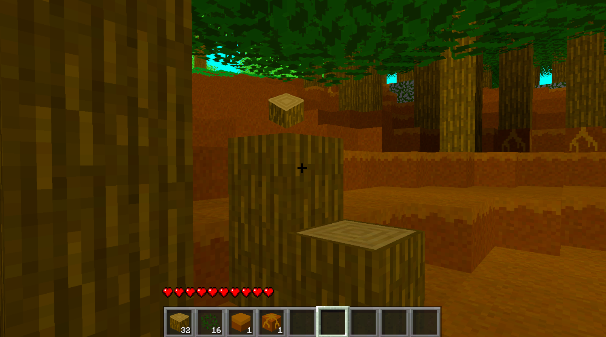
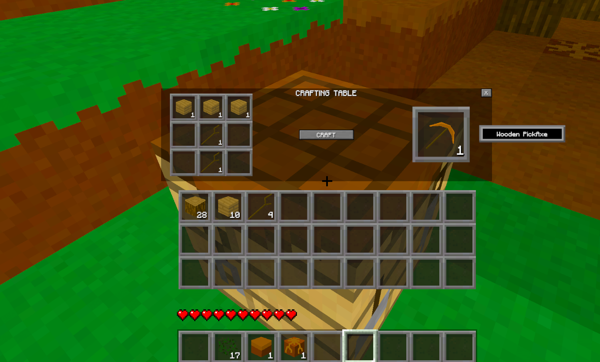
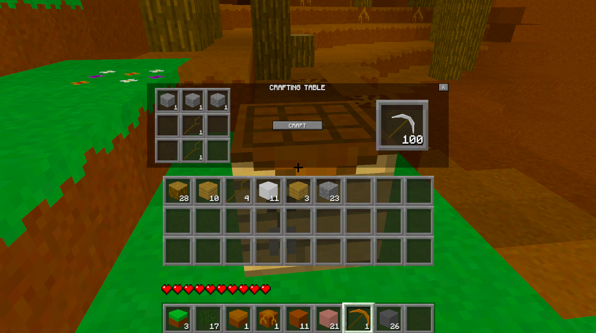
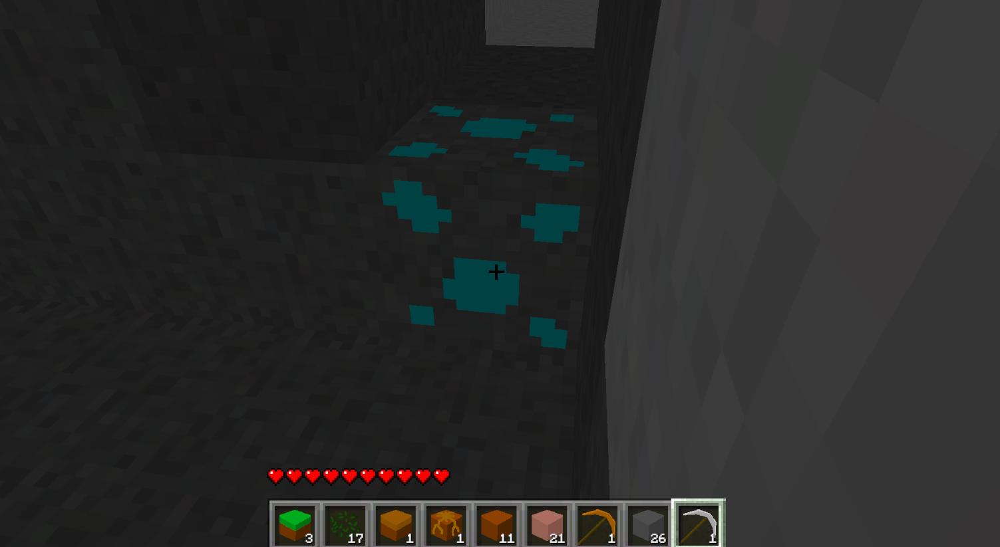
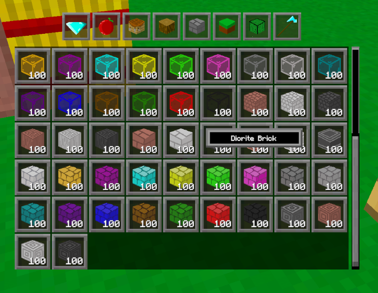
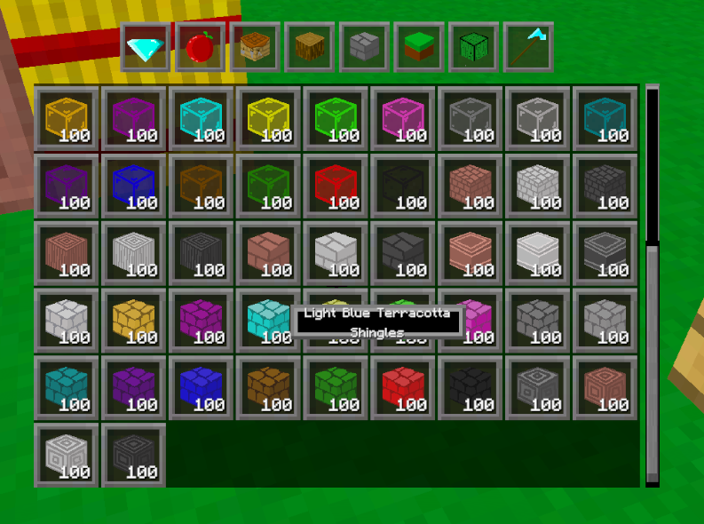
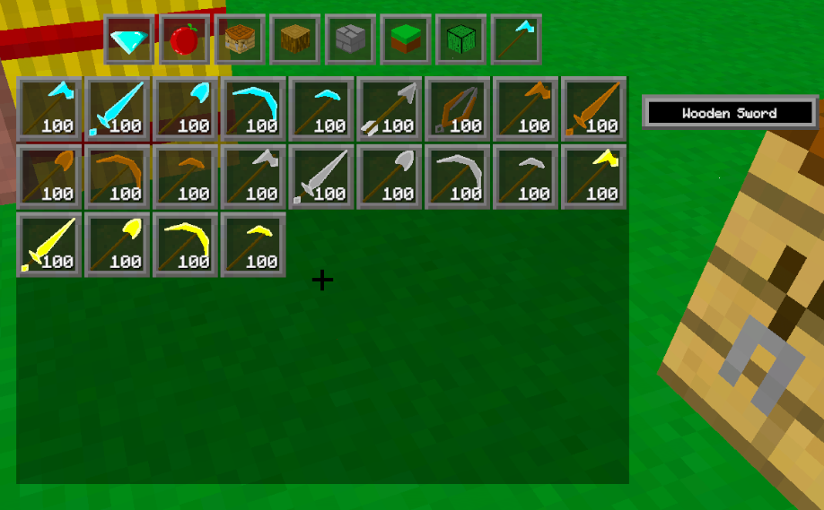
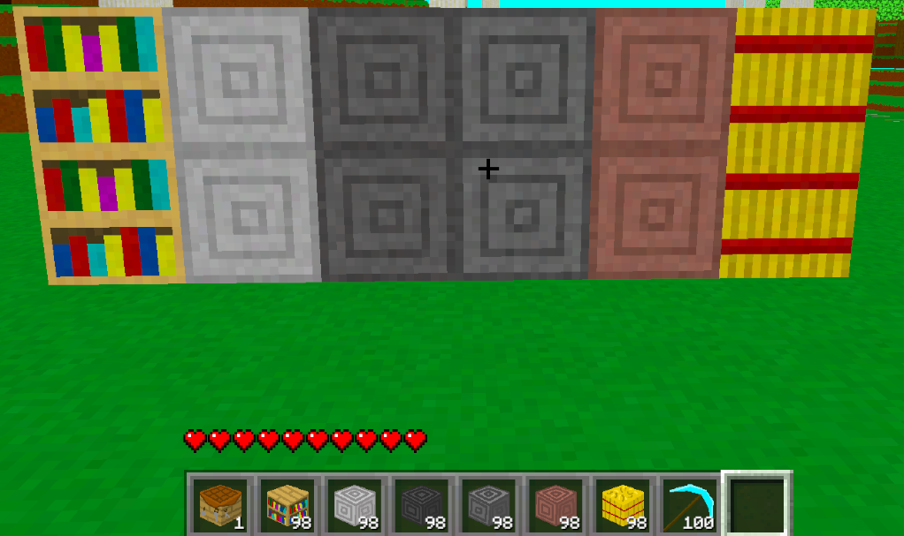

Devlog Five Overview
This will be a small devlog, and there is a reason for that. The next two devlogs will be very big. At least, the next one will be for sure. So, look forward to that. This devlog is about some essential systems to get the game ready for people to start testing it. Is the game ready for playtesters? Not really, it's barely anything as of yet. But I want to get a couple people in soon to start telling me some of the major problems with the game so far, and what kinds of things they think I should put more of a priority towards.
Luckily if I just want to get people playing a very in development game, there is a lot I don't have to include in the product. Like saving for instance, which will be in a future devlog. Stuff like that.
Main Features
One of the main systems that I somehow didn't have until now, but I put together for this devlog is the player being able to pick up items. This wasn't even that hard to do, I just never got around to it until now. I'll quickly explain how this works. When the player gets close to a dropped item, the item will look through the tool bar for the same item. If it finds nothing, it'll look for the first empty space it could go in. If it doesn't find an empty space, it'll repeat the process, but for the player's inventory. It'll look for the same item, and if it doesn't find it, will look for the first empty slot. I was going to show a picture for this, but it wouldn't really convey well in a picture. And I'm too lazy to take a video. You'll see it naturally anyways in the pictures for the next feature I talk about.
Another thing I never had in the game until now is the player being able to destroy blocks with just their hands. Previously if the player wanted to destroy, lets say a wooden log, they would've had to use an axe. That could be a problem for somebody just starting the game. But now they can punch a tree, get wood, make a pickaxe, and start getting stone to make a stone pickaxe and then go mining for diamonds. Because why not, I took some pictures of that walk through from punch wood to diamonds. Though doing so, made me realize that I don't actually have stone tools, and only thought I did. So, I'll add those in behind the scenes.




Another simple feature related to mining is that blocks now drop their proper items. Yah, as part of my goal to get things ready for players, I thought this was important. Previously the blocks were just dropping what that block was. Not useful for most ores in the game. And how did I expect player's to craft a diamond pickaxe when they weren't even able to get diamonds? They could only get the ore variation before.
I have realized something while playing and testing my game. The only way for the player to know what block they're using is to place it and look at it through the debug screen. Which isn't very user friendly. And doesn't work with items that can't be placed, like rotten flesh, bones, seeds, and much more. Now, I have a little mouse pop-up in the inventories which will say the block name of whatever icon the mouse is hovering over. I really like this feature.

Now, I'm only explaining this next part because it will give a glimpse into how I think and how I plan stuff. Not that there is much of any reasoning behind what I do. Right now this pop-up box is at a set size, no matter how much text is held within. That means that long names will not fit nicely within. This is something very easy to fix. I'd just have to change the width by a slight amount for each character within the text. But I want to save that kind of extra decoration for later in development, even if it is easy for me to implement. My thinking is that during a devlog in the future, I'll add a bunch of visual type improvements, and the game will suddenly look like night and day. Instead of a series of very slow improvements, I want a sudden big one. If that makes sense.

Something useful for new players is the ability to craft tools they can use. Now, I don't have mining speeds or durability on items yet. That will come in a future devlog. But a player still needs at least a wooden tool to mine blocks in the game. Don't forget that earlier in the devlog I mentioned that I forgot to add stone tools to the game. I'll add those behind the scenes between devlogs. So those won't be in the picture right now. Now, you may ask, why don't I add them now. That's because I don't want to. I'm feeling tired and lazy, and what to get this devlog published so I can start working on the next one in proper.

Blocks
I haven't been adding much blocks, as I've been working on other parts of the game. But, me being me, I have added a few. Actually while working on these new blocks, I realized that I haven't put much love towards the sand variations of blocks, which is unfortunate since they can be good blocks to build with. So, I'm probably going to have a bunch of new blocks for that in the next devlog.

Items
I've mainly been adding in items related to future devlogs, or for crafting certain blocks in the game. For instance, I've added paper, leather, and books, in order to craft bookshelves. Not that I have a way to obtain paper or leather in the game yet. Other than the creative menu. I think I'm getting real close to being able to add these types of items properly into the world soon though.
Also related to items, I have been adding in more crafting recipes for even more of the blocks I currently have in the game. This is just something I've been doing on the side, since it's such a tedious thing to do. And while thinking of crafing recipes for blocks that aren't in the original Minecraft, I have to hope the recipes are balanced enough to not be too unfair in any way.
Conclusion
I really want to get some people into the game. It's really too early for this, but I want to see what they will do, and what they think the game needs. Hopefully stuff related to building, like "you should add this type of block", and not something annoying like "you should add a dragon dimension". And as any developer of any game will know: players always find bugs that you didn't even know existed. So, I can't wait to see how many can be found. I'll likey do devlogs like this one every now and then. Devlogs focused on getting the game to be playable with what is currently in the project, and finding issues before a system is too ingrained to change.
I quickly mentioned this in the introduction, but the next devlog or two will be on the bigger side. Not a huge update or anything, just on the bigger side of the devlogs I've been releasing. I hope at least. I'm not going to spoil it either, but I'm rather excited about it.